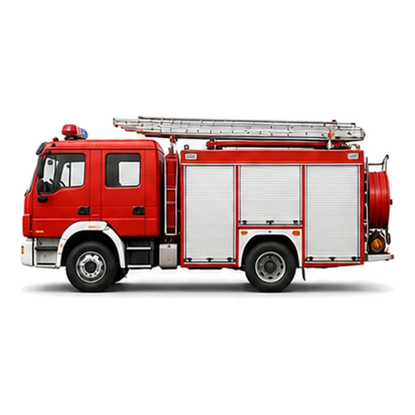
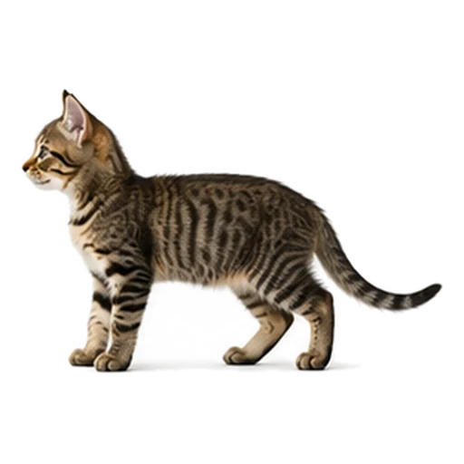

Yangi bo'lim
Farzandingizga
o'zi o'rgatadi.
2–5 yosh · 4 mavzu · 45 karta · o'zbekcha va ruscha

o't o'chirish
🔊 sirena

mushuk
«miyov»
🚗 Mashinalar 12
🐶 Hayvonlar 14
🎨 Ranglar 9
🔢 Raqamlar 10
Siz charchaysiz.
Ilova charchamaydi.
savol yo'q · ball yo'q
yutqazish yo'q · reklama yo'q
internetsiz ham ishlaydi
Bosadi — ovoz
nomini aytadi.